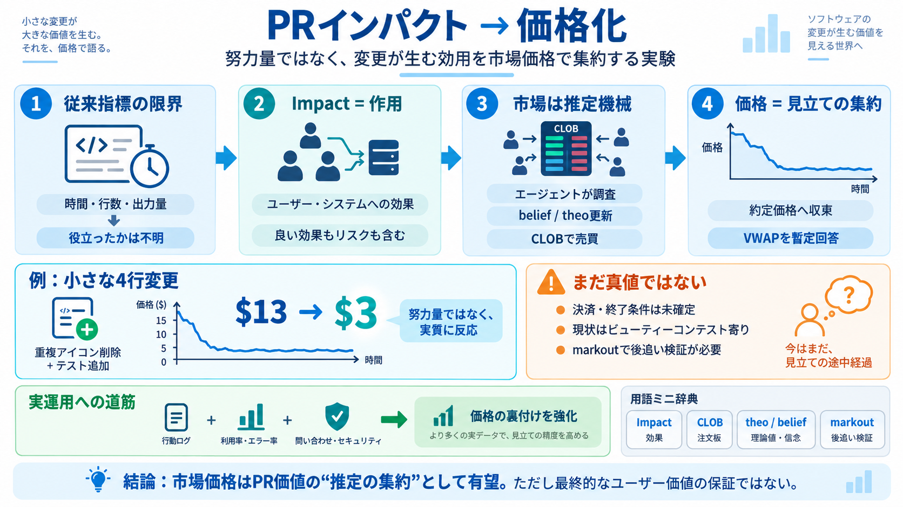

The 8 software engineering metrics AI broke - LeadDev
AI breaks that logic. A single engineer with an agent can quickly ship multiple PRs without any of those practices havin…

「コード出力量」ではなく、システムとユーザーへの効用（インパクト）を市場の価格（取引約定）に写す発想を要点だけ整理します。 （影響・効用 = Impact / 効果）
これまでの「コード出力量（例：1時間分の努力）」は計測しやすい一方で、ユーザーやシステムに本当に役立ったかが分かりません。 そこで“結果の効用”を測りたい、という問題意識があります。
市場は人々の「買う/売る意志」を通じて、基礎となる価値を価格に反映します。 ここではそれを、PRの将来価値を予想するエージェントの集約として使います。
インパクトを「その変更が関わるシステムやユーザーにどう作用するか」と定義します。 良い/悪いを単純に分けず、短期の都合で負債になる可能性も含めます。
価値には耐久性・利用される度合い・反実仮想（今やらなければ何が起きたか）など複数側面があります。 だから「単一の一次指標」へ素直に圧縮しにくい、と強調されています。
価格化の実験で難所になるのは、PRの「キャッシュフロー（決済）」が何か、いつ取引を終えるかです。 現時点では暫定プロトコルとして、時間/取引回数で区切り、出来高加重平均価格を答えにします。
市場は最初の楽観的期待で高く見積もられますが、エージェントの調査後にbelief（theo）が更新され、悲観側の売り注文が増えて収束します。 少なくとも“定性的見立ての集約”は試験的に成立しているように見えます。
例として、UIでの小規模な4行変更（重複アイコンの削除＋テスト追加）を市場に開いたところ、価格は約$13から$3へ収束しました。 さらにコード出力量やAIトークンコストも付随情報として示されています。
上の水準の価格は、「有害でも価値が顕著でもない、ニュートラルな効用」を示唆するように読めます。 つまり“努力に比例して高くなる”形にはならず、変更の実質に近い反応が出ています。
価格の正しさを支える「事後の真値（oracle）」や決済設計が未確定です。 本文でも、現状はビューティーコンテスト寄りで、実利用データの後追いラベル（markout / time差評価）が今後の改善点とされています。
実際に触った人の行動データを足せば、評価は上がり得ます。 例としてSlackやPostHogのようなシグナルを用い、利用・品質・リスクをインパクト定義に近づけることが期待されています。
本文要旨に出てくる中心概念を、短く対応づけておきます。
重要な注意：現状の価格は「最終的なユーザー価値」を保証するものではなく、収束挙動と集約能力の試験として位置づけるのが安全です。
AI breaks that logic. A single engineer with an agent can quickly ship multiple PRs without any of those practices havin…
- NSE Neuro-Symbolic SE - Q-SE Quantum SE - RAIE Responsible AI Engineering - RAISE Requirements Eng. for AIware …
### officefloor / ImpactGate Code review via the change impact measure ### JuanJFarina / pymetrica Pymetrica is a Pyt…
As the software engineering profession changes, Herogen enables engineers to have more impact in a shorter time than eve…
Read the case study → ## 5. Lead time for changes Lead time for changes is another DORA metric that measures the time …